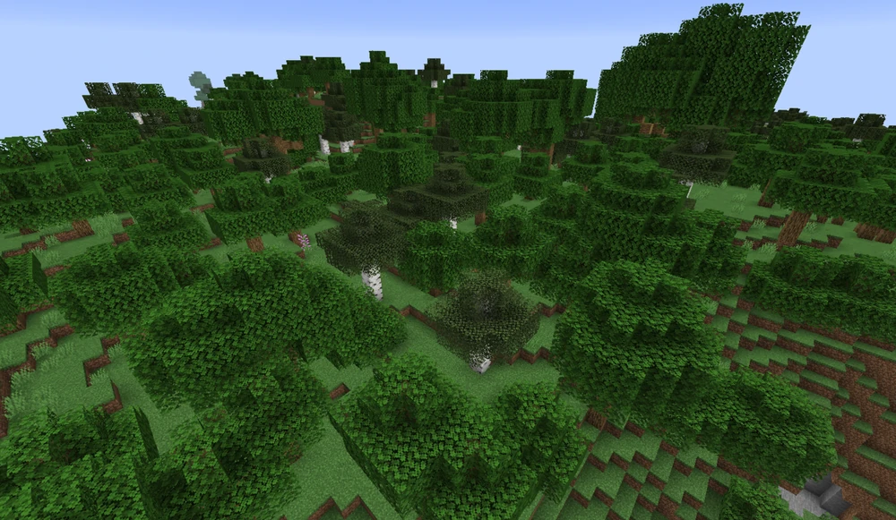
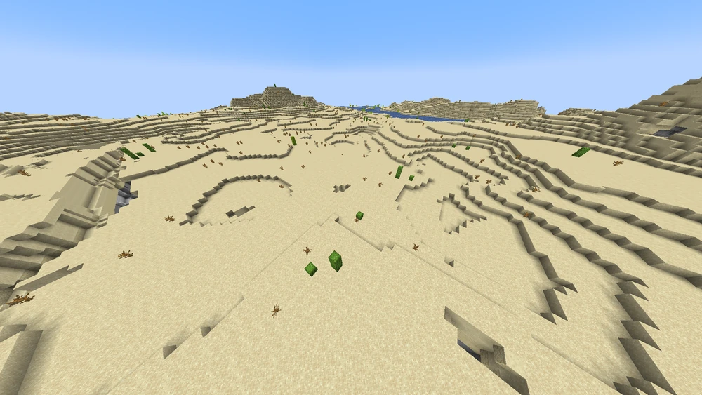
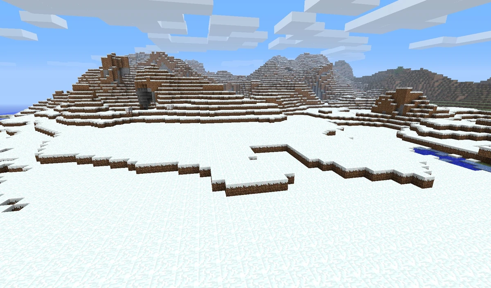
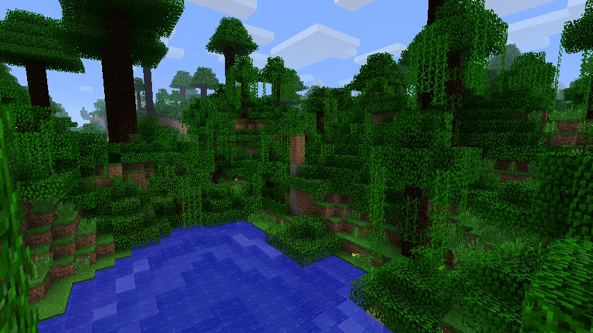
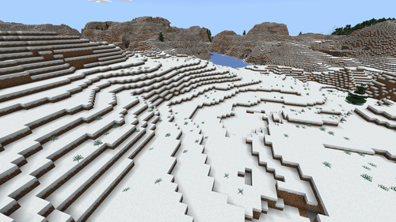
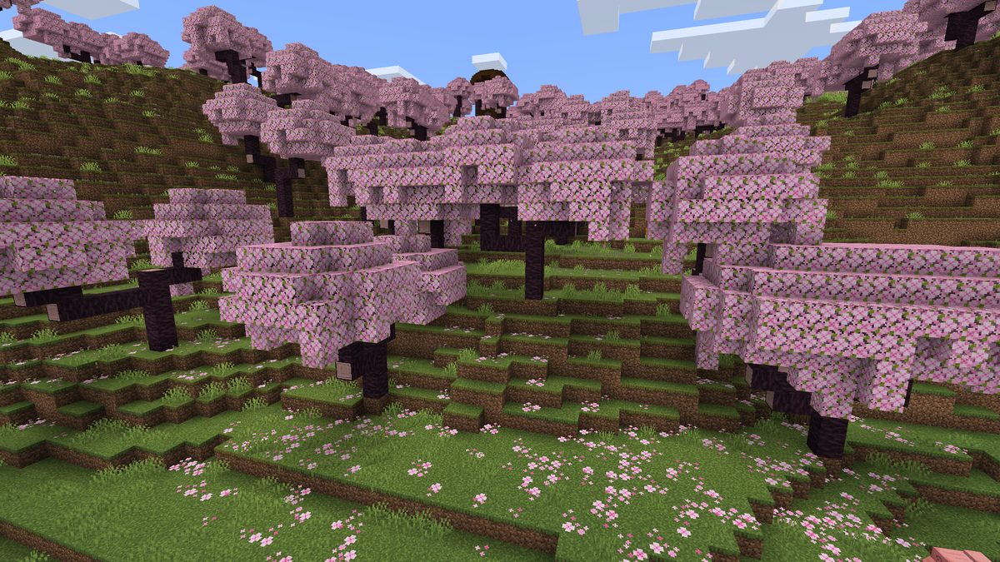
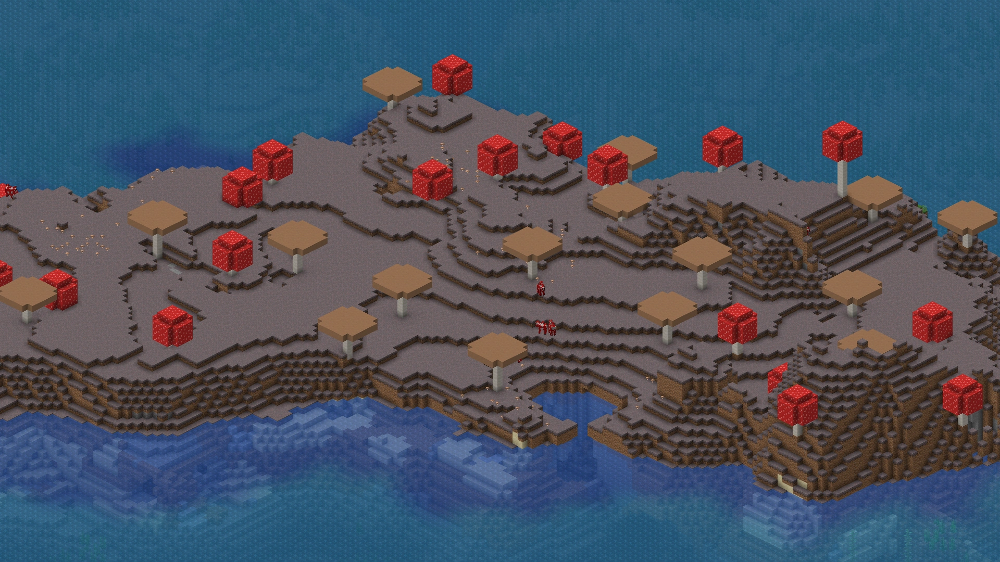
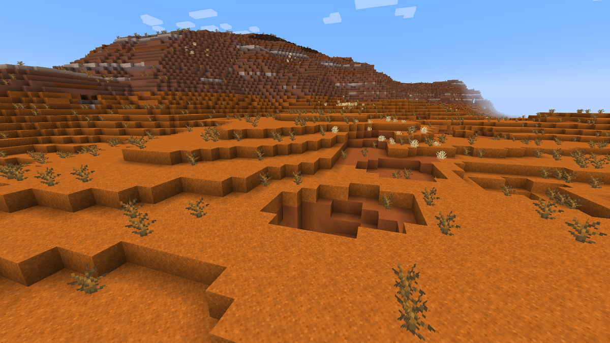

Floresta
Clima: Temperado
Mobs: Lobos, ovelhas, vacas
Recursos: Carvalho, bétula, flores
Saiba maisExplore todos os biomas do Minecraft e descubra suas características, recursos e criaturas.

Clima: Temperado
Mobs: Lobos, ovelhas, vacas
Recursos: Carvalho, bétula, flores
Saiba mais
Clima: Árido
Mobs: Zumbis, esqueletos, aranhas
Recursos: Cactos, areia, templos do deserto
Saiba mais
Clima: Frio
Mobs: Ursos polares, lobos, raposas
Recursos: Gelo, neve, ursos polares
Saiba mais
Clima: Tropical
Mobs: Papagaios, ocelotes, aranhas
Recursos: Madeira de selva, melancias, bambu
Saiba mais
Clima: Frio
Mobs: Ursos polares, lobos, raposas
Recursos: Gelo, neve, ursos polares
Saiba mais
Clima: Temperado
Mobs: Pardais, coelhos, javalis
Recursos: Árvores de cerejeira, melancias, bambu
Saiba mais
Clima: Umido
Mobs: Coguvacas
Recursos: Cogumelos Gigantes
Saiba mais
Clima: Árido
Mobs: Zumbis, esqueletos, aranhas
Recursos: Argila, minérios, templos do deserto
Saiba mais
Clima: Quente
Mobs: Piglins, Ghasts, Magma Cubes
Recursos: Quartzo, ouro, pedra-negra
Saiba mais
Clima: Frio
Mobs: Endermen, Shulkers, Ender Dragon
Recursos: Chorus Fruit, End Stone
Saiba mais